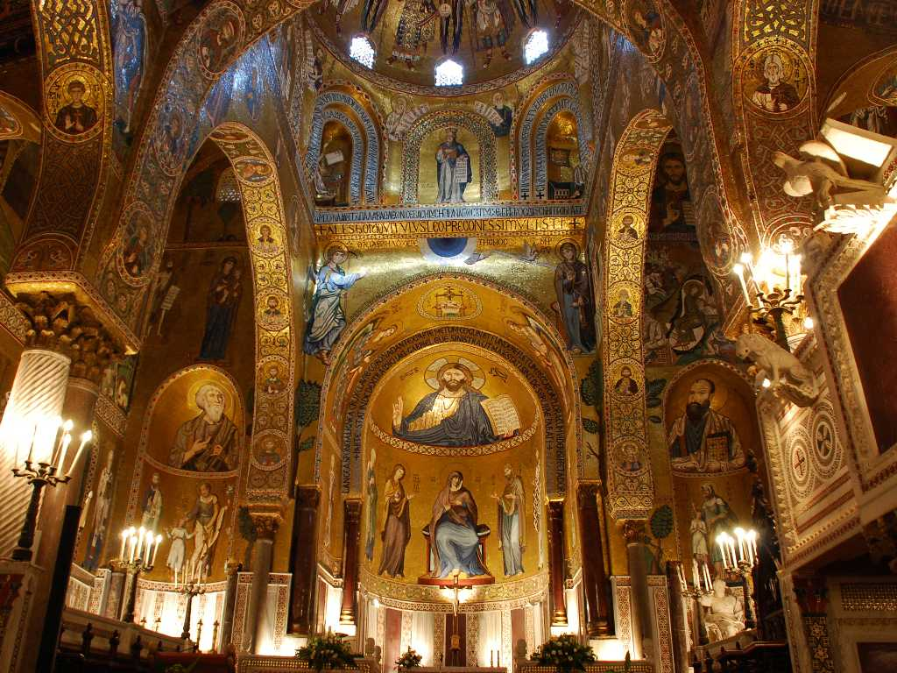
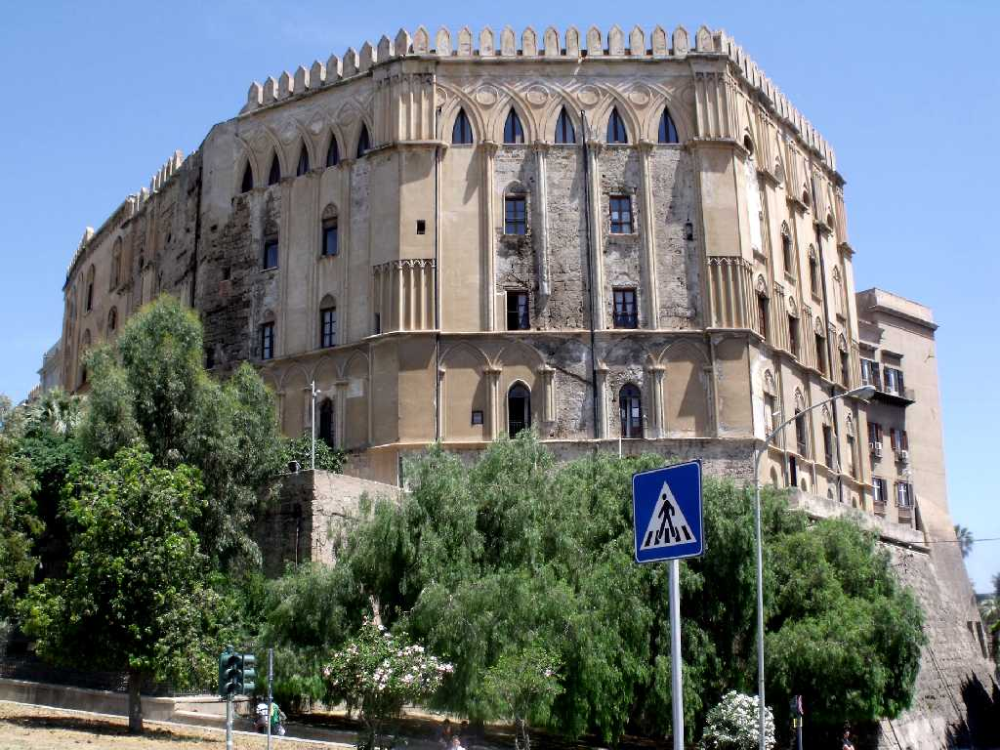
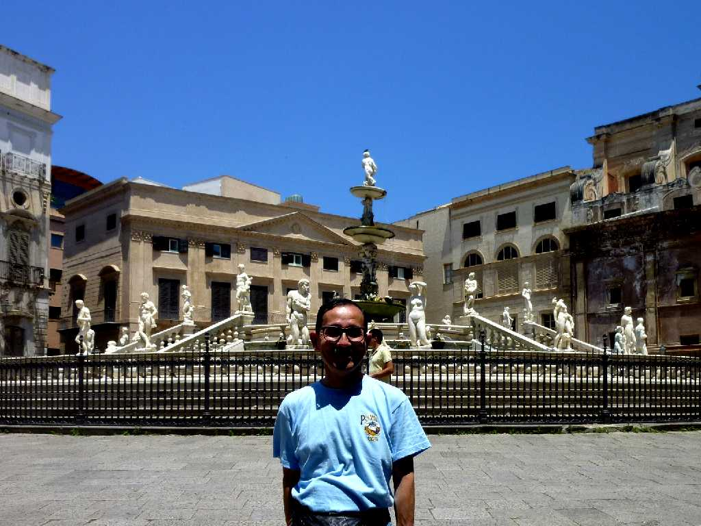

Cappella Palatina Palermo
聖ペレロに捧げるため１２世紀に創られたパラティーナ礼拝堂

Palazzo dei Normanni Palermo
９世紀にアラブ人が城塞として建築し１２世紀にノルマン人が宮廷として改装したノルマニ宮殿

June 16 2011 Piazza Pretoria Palermo
パレルモの中心街にあるプレトリアの噴水 パレルモはフェニキア人の街がギリシャ人の航海商人により発展しすべてが港を意味するPanormusから名付けられた